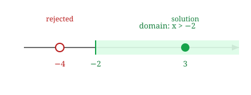

<script>if(location.hostname.endsWith('onrender.com'))location.replace('https://math-sandbox.github.io'+location.pathname+location.search+location.hash)</script>
<section class="theory" data-section="P23-2.4">
<h2>2.4 Solving logarithmic equations</h2>
<p class="src">Based on Cambridge International AS &amp; A Level Mathematics: Pure Mathematics 2 &amp; 3 Coursebook (Hugh Neill, Douglas Quadling and Julian Gilbey), Chapter 2 Logarithmic and exponential functions, printed pp.35–37 (Worked example 2.10, Exercise 2D). Own wording and new numbers. Solving exponential equations and inequalities is left to the later subsections, as in the book.</p>
<p class="key-words"><strong>Key words:</strong> <em>logarithmic equation</em>, <em>laws of logarithms</em>, <em>logarithm</em></p>
<p>A <strong>logarithmic equation</strong> is an equation in which the unknown appears inside a logarithm, or as the base of a logarithm. The usual method is to use the <strong>laws of logarithms</strong> to write each side as a single logarithm with the same base, and then to use the fact that if \(\log_a f=\log_a g\), then \(f=g\), provided both logarithms are defined.</p>
<p>A logarithm \(\log_a y\) is defined only when \(a\gt 0\), \(a\neq 1\) and \(y\gt 0\). After solving, every candidate must be checked in the original equation. A value that makes an argument zero or negative, or that makes a variable base non-positive or equal to \(1\), is not a solution, even if it satisfies an equation obtained later in the working. A common error is forgetting to check that each solution makes the logarithms defined.</p>
<div class="worked-example">
<h4>Worked example 1: Combining logarithms and equating</h4>
<p class="src">Book: Exercise 2D question 1 style, p.37; new numbers</p>
<p>Solve \(\log_5 x+\log_5 4=\log_5 48\).</p>
<ol class="steps">
<li>The multiplication law of logarithms gives \(\log_5(4x)=\log_5 48\), so \(4x=48\). <span class="mark">M1</span></li>
<li>Hence \(x=12\). This value is positive, so both sides of the original equation are defined, and \(x=12\) is the solution. <span class="mark">A1</span></li>
</ol>
<p class="final"><strong>Answer:</strong> \(x=12\)</p>
</div>
<div class="worked-example">
<h4>Worked example 2: Rejecting a root that is not defined</h4>
<p class="src">Book: Worked example 2.10 part a, p.36; new equation</p>
<p>Solve \(2\log_6(x+2)=\log_6(3x+16)\).</p>
<ol class="steps">
<li>The power law gives \(\log_6(x+2)^2=\log_6(3x+16)\), so \((x+2)^2=3x+16\). Expanding and rearranging, \(x^2+4x+4=3x+16\), hence \(x^2+x-12=0\). <span class="mark">M1</span></li>
<li>Then \((x+4)(x-3)=0\), so \(x=3\) or \(x=-4\). When \(x=3\), both \(x+2=5\) and \(3x+16=25\) are positive, and both sides equal \(\log_6 25\). When \(x=-4\), \(x+2=-2\), which is not positive, so \(\log_6(x+2)\) is not defined. The only solution is \(x=3\). <span class="mark">A1</span></li>
</ol>
<p class="final"><strong>Answer:</strong> \(x=3\)</p>
</div>
<p></p>
<div class="worked-example">
<h4>Worked example 3: An unknown base</h4>
<p class="src">Book: Worked example 2.10 part b and Exercise 2D question 4, pp.36–37; new numbers</p>
<p>Solve \(\log_x 27=3\).</p>
<ol class="steps">
<li>In exponential form, \(x^3=27\), so \(x=3\). (The real cube root of \(27\) is \(3\).) <span class="mark">M1</span></li>
<li>The base of a logarithm must be positive and not equal to \(1\), and \(3\) satisfies this. Checking, \(\log_3 27=3\), as required. <span class="mark">A1</span></li>
</ol>
<p class="final"><strong>Answer:</strong> \(x=3\)</p>
</div>
<h3>Past paper</h3>
<p class="src">9709/22/M/J/21 Question 1(a) only, 3 marks. Official QP and official MS. Part (b) is omitted (it uses cotangent). The question number was checked against the official QP.</p>
<p>Solve the equation \(\ln(2 + x) - \ln x = 2 \ln 3\). [3]</p>
<details><summary>Show official scheme</summary>
<ol class="steps">
<li>Use at least one relevant logarithm property correctly. Official MS: M1. <span class="mark">M1</span></li>
<li>Obtain the correct equation \(\dfrac{2 + x}{x} = 9\) or an equivalent with no logarithms. Official MS: A1. <span class="mark">A1</span></li>
<li>Obtain \(x = \dfrac{1}{4}\). Official MS: A1. <span class="mark">A1</span></li>
</ol></details>
<h3>Quick check</h3>
<div class="quick-check" data-q="QC1">
<p>Solve \(\log_2 x+\log_2 5=\log_2 40\).</p>
<p class="final"><strong>Answer:</strong> \(x=8\)</p>
</div>
<div class="quick-check" data-q="QC2">
<p>Solve \(\log_3(x+2)=2\).</p>
<p class="final"><strong>Answer:</strong> \(x=7\)</p>
</div>
<div class="quick-check" data-q="QC3">
<p>Solve \(2\log_5(x-1)=\log_5 36\).</p>
<p class="final"><strong>Answer:</strong> \(x=7\)</p>
</div>
</section>
